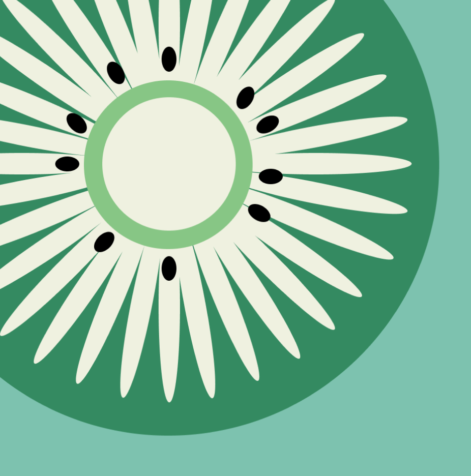
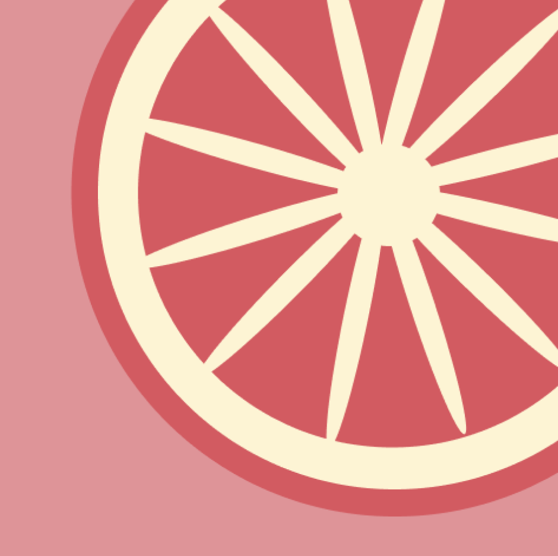
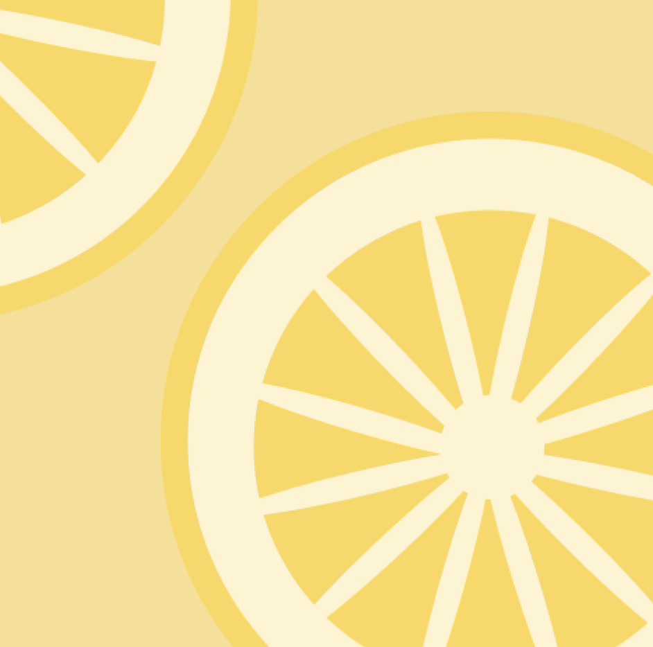
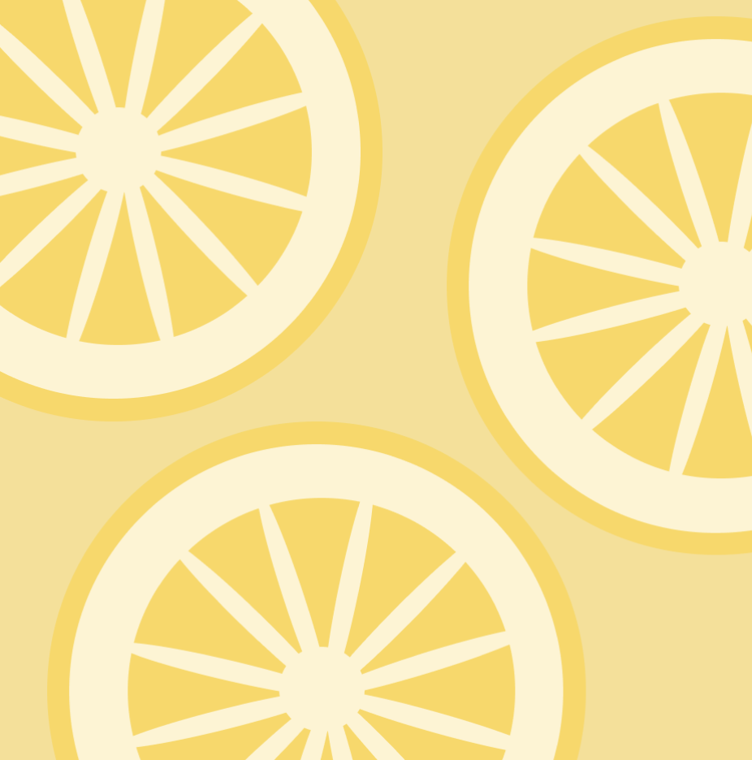
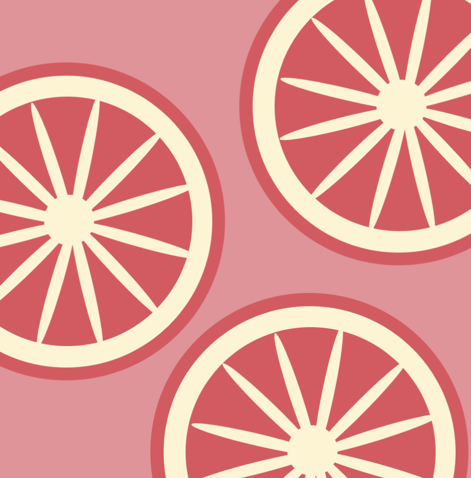

- 

- 


- 
- 
- 

The travel app project was one of my favourites of our first year. I chose to create an app that allowed users to keep track of the places they've travelled, as well as keep up with what their friends are up to. The app was titled 'Journey', with the slogan, 'travel together'.
For this project, I created an infrographic titled, 'Stop Violence Against Women'. Harassment and violence towards women is a very important subject, and is a massive global issue. I was able to use this project to produce many graphs and charts based around the subject, to evoke interest in order to raise awareness.
The following are illustrations I produced for my travel app project. I was very pleased with how they turned out. I love their clean, sleek and minimal appearance and aesthetic. Making these illustrations has shown me what I am capabable of as a designer, and how, when put to the challenge, I can create things that I doubted I ever could.
For our Nine Iterations project, we were placed into groups and tasked with collecting one hundred examples of one of the follow categories: point, line or plane. Our group chose point, and we chose to focus our research on food.
I decided to focus my project on fruit, specifically three kinds: kiwi, lemon and grapefruit. I chose these three because they have three prominent colours and distinctive, round shapes. I wanted the images to tell a story in terms of the number of fruit there were in each picture.
For this project, we had to take the influence of one of our favourite songs, and present it in a way that was appropriately relevant to the artist/lyrics. The song I chose for this project was Running in the Night by FM-84. The song and band has a lot of 80's influence, so I wanted to incorporate that into the project. I also wanted to take into consideration the colours of the album cover, and how it contains typical elements of synth-wave and retro-wave.